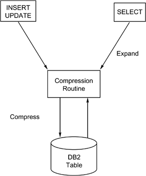
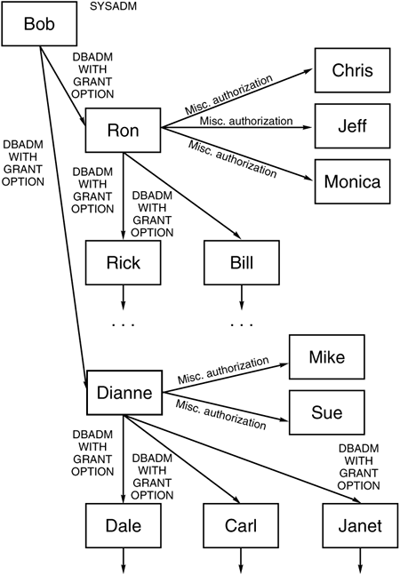

|
|
< Day Day Up > |
|
DB2 ToolsThe sheer number of DB2 add-on tools that are available in the marketplace validates the need for these tools. Most DB2 shops implement one or more add-on tools for DB2. Of these, IBM's QMF is among the most popular. Many more tools from other vendors fill the void for optimizing performance, implementing database changes, and ensuring database recoverability, just to name a few of their capabilities. Table 39.1 provides a rundown of the categories of products. These types of add-on tools can significantly improve the efficiency of DB2 application development. Even IBM is beginning to understand the need for better management tools. IBM provides several DBA tools for free with DB2, including:
Of course, IBM has sold other DB2 tools for a fee such as QMF and DB2-PM for quite some time now. Recently, IBM augmented its portfolio of add-on DB2 tools, and they now compete with the primary DB2 tool vendors such as BMC Software and Computer Associates. In the following sections, each tool category is described, along with a discussion of desired features. In evaluating products, look for features important to your organization. These lists are not comprehensive, but they provide a good starting point for the evaluation process. Table Altering ToolsDB2 provides the capability to modify the structure of existing objects using the ALTER DDL statement. The ALTER statement, however, is a functionally crippled statement. Many times DBAs find themselves in a position where it would be nice to be able to alter all the parameters that can be specified for an object; but DB2 does not support this. For example, you can add columns to an existing table (only at the end), but you cannot remove columns from a table. The table must be dropped and then re-created without the columns you want to remove.
Another problem that DBAs encounter in modifying DB2 objects is the cascading drop effect. If a change to a table space mandates its being dropped and re-created (for example, changing the limit keys of a partitioned table space), all dependent objects are dropped when the table space is dropped. This includes the following:
Ensuring that DDL is issued after the modification to reverse the effects of cascading drops can be a tedious, complex, and error-prone procedure. Many types of DB2 object alteration cannot be performed using the generic DB2 ALTER statement. Several examples follow:
This list provides the justification needed to obtain an alter tool. Such a tool provides an integrated environment for altering DB2 objects. The burden of ensuring that a change to a DB2 object does not cause other implicit changes is moved from the DBA to the tool. At a minimum, an alter tool should perform the following functions:
Auditing ToolsAn audit is the examination of a practice to determine its correctness. DB2 auditing software therefore should help in monitoring the data control, data definition, and data integrity in the DB2 environment. Several mechanisms provided by DB2 enable the creation of an audit trail, but this trail can be difficult to follow. The primary vehicle provided by DB2 for auditing is the audit trace. This feature enables DB2 to trace and record auditable activity initiated by specific users. When the DB2 audit trace is activated, the following type of information can be captured to the trace destination:
An auditable table is any table defined to DB2 with the AUDIT clause of the CREATE TABLE statement. There are three options for table auditing: NONE, CHANGES, and ALL. Specifying AUDIT NONE, which is the default, disables table auditing so that the audit trace does not track that table. Specifying AUDIT CHANGES indicates that the first DELETE, INSERT, or UPDATE statement issued against that table in every application unit of work (COMMIT scope) is recorded. AUDIT ALL records the first DML statement of any type accessing this table in each application unit of work. Note, however, that this information is tracked only if the appropriate audit trace is activated. Refer to Chapter 24, "Traditional DB2 Performance Monitoring," for more information on DB2 audit traces. This information is written to the output trace destination specified for the audit trace. DB2 trace records can be written to GTF, SMF, or an OP buffer. After the information has been written to the specified destination, the problem of how to read this information still exists. If you have DB2-PM, you can run the appropriate audit reports, but even these can be insufficient for true auditing. An audit tool should provide five important features that DB2's audit tracing capability does not. DB2 auditing requires a trace to be activated, and this can quickly become expensive if many tables must be audited. The first feature an auditing tool should provide is the capability to read the DB2 logs, which are always produced, and report on update activity as needed. This reduces overhead because it uses the regular processing features of DB2 rather than an additional tracing feature, which increases overhead. The DB2 audit trace records a trace record only for the first statement in a unit of work. The second feature of the auditing tool is reporting all data modification from the DB2 logs. The DB2 audit trace facility does not record the specifics of the data modification. The third feature of an auditing tool is reporting who (by authorization ID) makes each change, and also showing a before and after image of the changed data. The fourth feature the auditing tool should provide is the capability to report on the DB2 audit trace data if so desired. A fifth feature of a DB2 auditing tool is to access the DB2 logs to create redo (or undo) SQL scripts that can be run to re-apply data modifications that occurred during a specific timespan. Although this feature does not provide a true auditing function, it is a common feature since auditing tools by their very nature must access the DB2 logs. NOTE Another name for generating undo and redo SQL from the log is transaction recovery. An undo transaction recovery involves generating undo SQL statements to reverse the effect of the transactions in error. To generate undo SQL, the database log is read to find the data modifications that were applied during a given timeframe and
Redo is a similar form of transaction recovery. But instead of generating SQL for the bad transaction that we want to eliminate, we generate the SQL for the transactions we want to save. Then, we do a standard point in time recovery eliminating all the transactions since the recovery point. Finally, we reapply the good transactions captured in the first step. Unlike the undo process, which creates SQL statements that are designed to back out all of the problem transactions, the redo process creates SQL statements that are designed to reapply only the valid transactions from a consistent point of recovery to the current time. Because the redo process does not generate SQL for the problem transactions, performing a recovery and then executing the redo SQL can restore the table space to a current state that does not include the problem transactions. Finally, the auditing tool should provide both standard reports and the capability to create site-specific reports (either from the log or from the DB2 audit trace data). If your shop has strict auditing requirements, an auditing tool is almost mandatory because of DB2's weak inherent auditing capabilities. Additional things to look for in an auditing tool include the following:
DB2 Catalog Query and Analysis ToolsThe DB2 Catalog contains a wealth of information essential to the operation of DB2. Information about all DB2 objects, authority, and recovery is stored and maintained in the DB2 Catalog. This system catalog is composed of DB2 tables and can be queried using SQL. The data returned by these queries provides a base of information for many DB2 monitoring and administrative tasks. Coding SQL can be a time-consuming process. Often, you must combine information from multiple DB2 Catalog tables to provide the user with facts relevant for a particular task. This can be verified by reexamining the DB2 Catalog queries presented in Chapter 26, "DB2 Object Monitoring Using the DB2 Catalog and RTS." Add-on tools can ease the burden of developing DB2 Catalog queries. The basic feature common to all DB2 Catalog tools is the capability to request DB2 Catalog information using a screen-driven interface without coding SQL statements. Analysts can obtain rapid access to specific facts stored in the DB2 Catalog without the burden of coding (sometimes quite complex) SQL. Furthermore, procedural logic is sometimes required to adequately query specific types of catalog information. Instead of merely enabling data access, many DB2 Catalog tools can do one or more of the following:
These features aid the DBA in performing his day-to-day duties. Furthermore, a catalog query tool can greatly diminish the amount of time required for a junior DBA to become a productive member of the DBA team. Compression ToolsA standard tool for reducing DASD costs is the compression utility. This type of tool operates by applying an algorithm to the data in a table so that the data is encoded in a more compact area. By reducing the amount of area needed to store data, DASD costs are decreased. Compression tools must compress the data when it is added to the table and subsequently modified, and then expand the data when it is later retrieved (see Figure 39.1). Figure 39.1. A DB2 table compression routine at work. Third-party compression routines are specified for DB2 tables using the EDITPROC clause of the CREATE TABLE statement. The load module name for the compression routine is supplied as the parameter to the EDITPROC clause. A table must be dropped and re-created to apply an EDITPROC. In general, a compression algorithm increases CPU costs while providing benefits in the areas of decreased DASD utilization and sometimes decreased I/O costs. This trade-off is not beneficial for all tables. For example, if a compression routine saves 30% on DASD costs but increases CPU without decreasing I/O, the trade-off is probably not beneficial. A compression tool can decrease DASD by reducing the size of the rows to be stored. CPU use usually increases because additional processing is required to compress and expand the row. I/O costs, however, could decrease. Enhancements to DB2 since V2.3 have made most third-party compression tools of little added value. DB2 provides a basic compression routine called DSN8HUFF. Still most third-party compression tools provide more efficient compression algorithms and advanced analysis to determine the costs and benefits of compression for a specific table. This changed dramatically with DB2 V3. The internal compression capabilities of DB2 since V3 are such that DB2 compression outperforms third-party compression tools. Even when a third-party compression tool can provide benefit to an organization (perhaps because it offers multiple compression routines geared for different types of data), the return on investment is such that most shops typically stick with internal DB2 compression for new tables. The third-party compression tools, however, have not become obsolete. Many organizations refuse to remove software that is working for any number of reasons (from an "if it ain't broken don't fix it" mentality to "not enough cycles to implement such a vast change"). Indeed, most shops are too busy with production work to support the additional effort of removing the third-party EDITPROCs and replacing them with internal DB2 compression. There are other types of compression tools than those that simply compress DB2 table space data. Some tools compress DB2 image copy backup data sets. These are divided into two camps: those that compress DASD backups and those that compress cartridge backups. This type of compression tool can provide the following benefits:
Another type of compression tool is available from several vendors to compress DB2's archive log data sets. By compressing archive logs, you might be able to fit more archive data sets on DASD, thereby improving the performance of a recovery situation. DB2-Related Client/Server ToolsMany applications these days span multiple computing environments. This phenomenon is known as client/server processing, and it has proven to be quite successful because it provides a flexible, distributed computing environment. DB2 is a large participant in the client/server plans for many shops. Providing efficient access to large amounts of data, DB2 for z/OS can function as the ultimate database server in a client/server environment. This being the case, there are many tools on the market that can ease the burden of implementing and administering DB2 in a client/server environment. Middleware products and database gateways that sit between the client workstation and the mainframe enable access to DB2 as a server. These products can provide access to DB2 for z/OS, to DB2 on other platforms, and also to other DBMS server products (Oracle, Microsoft SQL Server, Sybase Adaptive Server Enterprise, Informix, and so on). Additionally, third-party ODBC and JDBC drivers are available to ease workstation access to mainframe DB2 data. Another valid type of client/server tool is a 4GL programming environment that provides seamless access to DB2. These types of products typically split the application workload between the workstation and the server aiding the programmer to rapidly develop DB2 client/server applications. Database Analysis ToolsDB2 provides only minimal intelligence for database analysis. Usually, a database administrator or performance analyst must keep a vigilant watch over DB2 objects using DB2 Catalog queries or a DB2 Catalog tool. This is not an optimal solution, because it relies on human intervention for efficient database organization, opening up the possibility of human error, forgetting to monitor, and misinterpreting analyzed data. Fortunately, database analysis tools can proactively and automatically monitor your DB2 environment. This monitoring can perform the following functions:
NOTE
Database Modeling and Design ToolsDatabase modeling and design tools do not have to be unique to DB2 design, although some are. Application development should be based on sound data and process models. The use of a tool to ensure this is a good practice. Database modeling and design tools may be referred to as CASE tools. CASE, or computer-aided software engineering, is the process of automating the application development life cycle. A CASE tool, such as a data modeling tool, supports portions of that life cycle. A comprehensive checklist of features to look for in a CASE tool is presented in Chapter 14, "Alternative DB2 Application Development Methods." Although CASE tools were very popular in the late 1980s and early 1990s, they have not been in vogue since (though some DB2 applications that were developed in a CASE tool environment still run in production). Many excellent database design and modeling tools are not specifically designed for DB2 but can be used to develop DB2 applications. Tools developed specifically to support DB2 development, however, add another dimension to the application development effort. They can significantly reduce the development timeframe by automating repetitive tasks and validating the models. If your organization decides to obtain a CASE tool that specifically supports DB2, look for one that can do the following:
DASD and Space Management ToolsDB2 provides basic statistics for space utilization in the DB2 Catalog, but the in-depth statistics required for both space management and performance tuning are woefully inadequate. The queries presented in Chapter 26 form a basis for DB2 DASD management, but critical elements are missing. Monitoring the space requirements of the underlying VSAM data sets to maintain historical growth information can be difficult without a space management tool. When data sets go into secondary extents, performance suffers. Without a DASD management tool, you would have to monitor Real Time Stats or periodically examine LISTCAT output to monitor secondary extents. Both can be time-consuming. Additionally, the manner in which DB2 allocates space can result in the inefficient use of DASD. Often space is allocated but DB2 does not use it. Although the STOSPACE utility, combined with DB2 queries, provides limited out-of-the-box DASD management, this capability is far from robust. A DASD management tool is the only answer for ferreting out the amount of allocated space versus the amount of used space. DASD management tools often interface with other DB2 and DASD support tools such as standard MVS space management tools, database analysis tools, DB2 Catalog query and management tools, and DB2 utility JCL generators. DB2 Table EditorsThe only method of updating DB2 data is with the SQL data manipulation language statements DELETE, INSERT, and UPDATE. Because these SQL statements operate on data a set at a time, multiple rows—or even all of the rows—can be affected by a single SQL statement. Coding SQL statements for every data modification required during the application development and testing phase can be time-consuming. A DB2 table editing tool reduces the time needed to make simple data alterations by providing full-screen edit capability for DB2 tables. The user specifies the table to edit and is placed in an edit session that resembles the ISPF editor. The data is presented to the user as a series of rows, with the columns separated by spaces. A header line indicates the column names. The data can be scrolled up and down, as well as left and right. To change data, the user simply types over the current data. This type of tool is ideal for supporting the application development process. A programmer can make quick changes without coding SQL. Also, if properly implemented, a table editor can reduce the number of erroneous data modifications made by beginning SQL users. CAUTION Remember that the table editor is issuing SQL in the background to implement the requested changes. This can cause a lag between the time the user updates the data and the time the data is committed. Table editor updates usually are committed only when the user requests that the data be saved or when the user backs out of the edit session without canceling. Remember too that table editors can consume a vast amount of resources. Ensure that the tool can limit the number of rows to be read into the editing session. For example, can the tool set a filter such that only the rows meeting certain search criteria are read? Can a limit be set on the number of rows to be read into any one edit session? Without this capability, large table space scans can result. A DB2 table editor should be used only in the testing environment. End users or programmers might request that a table editor be made available for production data modification. This should be avoided at all costs. The data in production tables is critical to the success of your organization and should be treated with great care. Production data modification should be accomplished only with thoroughly tested SQL or production plans. When a table editor is used, all columns are available for update. Thus, if a table editor is used to change production data, a simple mis-keying can cause unwanted updates. Native SQL should be used if you must ensure that only certain columns are updated. Tested SQL statements and application plans are characterized by their planned nature. The modification requests were well thought out and tested. This is not true for changes implemented through a table editor. Additionally, tested SQL statements and application plans are characterized by their planned nature. The modification requests were well thought out and tested. This is not true for changes implemented through a table editor. In addition to simple online browsing and editing of DB2 data using ISPF (or a GUI), the table-editing tool should be able to
Sometimes other DB2 tools, such as a DB2 Catalog query tool, will come with an integrated table editor. Extract/Transformation/Load (Data Movement) ToolsAt times, multiple database management systems coexist in data processing shops. This is increasingly true as shops embark on client/server initiatives. Additionally, the same data (or a subset thereof) might need to be stored in each of the databases. In a multiple DBMS environment, the movement of data from DBMS to DBMS is a tedious task. The need to move data from one environment to another is increasing with the overwhelming acceptance and implementation of data warehouses. ETL tools ease the burden because the tool understands the data format and environment of each DBMS it works with. The data movement and warehousing tool(s) that a shop chooses depends on the following factors:
The answers to these questions help determine the type of data conversion tool necessary. Two basic types of conversion tools are popular in the market today: Integrity ToolsReferential integrity has been available on DB2 since the early days of DB2 but it can be difficult to administer and implement properly. RI tools eliminate the difficulty by performing one of the following functions:
Check constraints for data integrity have been available with DB2 since V4. Tools can help implement and maintain check constraints in the following ways:
DB2 Object Migration ToolsDB2 does not provide a feature to migrate DB2 objects from one subsystem to another. This can be accomplished only by manually storing the CREATE DDL statements (and all subsequent ALTER statements) for future application in another system. Manual processes such as this are error-prone. Also, this process does not take into account the migration of table data, DB2 security, plans, packages, statistics, and so on. DB2 object migration tools facilitate the quick migration of DB2 objects from one DB2 subsystem to another. They are similar to a table altering tool but have minimal altering capability (some interface directly with an alter tool or are integrated into a single tool). The migration procedure is usually driven by ISPF panels that prompt the user for the objects to migrate. Migration typically can be specified at any level. For example, if you request the migration of a specific database, you also could migrate all dependent objects and security. A renaming capability typically is provided so that database names, authorization IDs, and other objects are renamed according to the standards of the receiving subsystem. When the parameters of the migration have been specified completely, the tool creates a job stream to implement the requested DB2 objects in the requested DB2 subsystem. A migration tool reduces the time required by database administrators to move DB2 databases from environment to environment (for example, from test to production). Quicker turnaround results in a more rapid response to user needs, thereby increasing the efficiency of your business. Typically, migration tools are the second DB2 tool that an organization acquires (right after a DB2 Catalog query product). Miscellaneous ToolsMany types of DB2 tools are available. The categories in this chapter cover the major types of DB2 tools, but not all tools can be easily pigeonholed. For example, consider a DB2 table space calculator. It reads table DDL and information on the number of rows in the table to estimate space requirements. A space calculator is often provided with another tool, such as a DASD management tool or a database design and modeling tool. The number and types of DB2 tools that are available in the market are constantly growing and are limited only by the imagination and ingenuity of the programmers and vendors offering these solutions. Internet Enabling ToolsThe Internet is the hottest technology trend of the past decade. Every organization is looking for ways to increase their competitive advantage by making corporate data available to customers, partners, and employees over the Internet, intranet, and extranets. A specialized category of tools is available to hook DB2 data to the Web. These tools are referred to as Internet-enabling tools. For more information on the Internet and IBM's tools for connecting the Web to DB2, refer to Chapter 17, "DB2 and the Internet." Operational Support ToolsMany avenues encompass operational support in a DB2 environment, ranging from standards and procedures to tools that guarantee smoother operation. This section describes tools from several operational support categories. One type of product delivers online access to DB2 documentation. With this tool, you avoid the cost of purchasing DB2 manuals for all programmers, and DB2 information and error messages are always available online. In addition, analysts and DBAs who dial in to the mainframe from home can reference DB2 manuals online rather than keep printed copies at home. IBM's Book Manager is an example of this type of tool. Another similar type of operational support tool provides online access to DB2 standards and procedures. These tools are commonly populated with model DB2 standards and procedures that can be modified or extended. Tools of this nature are ideal for a shop with little DB2 experience that wants to launch a DB2 project. As the shop grows, the standards and procedures can grow with it. Products that provide "canned" standards for implementing, accessing, and administering DB2 databases are particularly useful for shops new to DB2. By purchasing an online standards manual, these shops can quickly come up-to-speed with DB2. However, mature DB2 shops can also benefit from these types of products if the third-party vendor automatically ships updates whenever IBM ships a new release of DB2. This can function as cheap training in the new DB2 release. A product containing DB2 standards should fulfill the following requirements:
Tools also exist to enable a better batch interface to DB2. Standard batch DB2 programs run under the control of the TSO terminal monitor program, IKJEFT01. Another operational support tool provides a call-attach interface that enables DB2 batch programs to run as a standard MVS batch job without the TSO TMP. DB2, unlike IMS, provides no inherent capability for storing checkpoint information. Tools that store checkpoint information that can be used by the program during a subsequent restart are useful for large batch DB2 applications issuing many COMMITs. One final type of operational support tool assists in managing changes. These tools are typically integrated into a change control tool that manages program changes. Change control implemented for DB2 can involve version control, plan and package management, and ensure that timestamp mismatches (SQLCODE -818) are avoided. Some tools can even control changes to DB2 objects. PC-Based DB2 Emulation ProductsPersonal computers are pervasive and most data processing professionals have one on their desk. Most end users do, too. As such, the need to access DB2 from the PC is a viable one. However, not everyone needs to do this in a client/server environment. Sometimes, just simple access from a PC will suffice. For this, a PC query tool can be used. Data requests originate from the PC workstation. The tool sends the requests to the mainframe for processing. When processing is finished, the data is returned to the PC and formatted. These types of tools typically use a graphical user interface with pull-down menus and point-and-click functionality. These features are not available on mainframe products. Another popular approach to developing DB2 applications is to create a similar environment on the PC. This can be done using a PC DBMS that works like DB2 and other similar PC products that mimic the mainframe (COBOL, IMS/TM, CICS, JCL, and so on). DB2 for Linux, Unix, and Windows is, of course, the most popular PC DBMS in this category, but there are others. Quite often, tools that can be used in a straight PC environment also can be used in a client/server environment. Plan Analysis ToolsThe development of SQL to access DB2 tables is the responsibility of an application development team. With SQL's flexibility, the same request can be made in different ways. Because some of these ways are inefficient, the performance of an application's SQL could fluctuate wildly unless the SQL is analyzed in-depth by an expert before implementation. The DB2 EXPLAIN command provides information about the access paths used by SQL queries by parsing SQL in application programs and placing encoded output into a DB2 PLAN_TABLE. To gauge efficiency, a DBA must decode the PLAN_TABLE data and determine whether a more efficient access path is available. SQL code reviews are required to ensure that optimal SQL design techniques are used. SQL code walkthroughs are typically performed by a DBA, a performance analyst, or someone with experience in SQL coding. This walkthrough must consist of reviews of the SQL statements, the selected access paths, and the program code in which the SQL is embedded. It also includes an evaluation of the RUNSTATS information to ascertain whether production-level statistics were used at the time of the EXPLAIN. A line-by-line review of application source code and EXPLAIN output is tedious and prone to error, and it can cause application backlogs. A plan analysis tool can greatly simplify this process by automating major portions of the code review process. A plan analysis tool can typically perform the following functions:
Currently, no tool can analyze the performance of the COBOL code in context along with the SQL that is embedded in it. For example, consider an application program that embeds a singleton SELECT inside a loop. The singleton SELECT requests a single row based on a predicate, checking for the primary key of that table. The primary key value is changed for each iteration of the loop so that the entire table is read from the lowest key value to the highest key value. A plan analysis tool will probably not flag the SQL statement because the predicate value is for the primary key, which causes an indexed access. It could be more efficient to code a cursor, without a predicate, to retrieve every row of the table, and then fetch each row one by one. This method might use sequential prefetch or query I/O parallelism, thereby reducing I/O and elapsed time, and therefore enhancing performance. Only a trained analyst can catch this type of design problem during a code walkthrough. Plan analysis tools also miss other potential problems, such as when the program has two cursors that should be coded as a one-cursor join. Although a plan analysis tool significantly reduces the effort involved in the code review process, it cannot eliminate it. Following are some required features for a plan analysis tool:
Performance MonitorsPerformance monitoring and tuning can be one of the most time-consuming tasks for large or critical DB2 applications. This topic was covered in depth in Parts V and VI. DB2 performance monitoring and analysis tools support many features in many ways. For example, DB2 performance tools can operate as follows:
DB2 performance tools support one or more of these features. The evaluation of DB2 performance monitors is a complex task. Often more than one performance monitor is used at a single site. Vendors who sell suites of performance monitors for other system software also frequently offer DB2 performance monitors. Whenever possible, try to utilize a DB2 performance monitor that not only offers full functionality for DB2 monitoring, but also integrates with your other performance monitors that work with DB2 (such as your monitors for CICS, IMS, and z/OS). For more information on DB2 performance monitoring and tuning, refer to Parts V and VI. Products to Enhance PerformancePerformance is an important facet of DB2 database administration. Many shops dedicate several analysts to tweaking and tuning SQL, DB2, and its environment to elicit every performance enhancement possible. If your shop falls into this category, several tools on the market enhance the performance of DB2 by adding functionality directly to DB2. These DB2 performance tools can interact with the base code of DB2 and provide enhanced performance. Typically, these products take advantage of known DB2 shortcomings. For example, products exist to perform the following functions:
Care must be taken when evaluating DB2 performance tools. New releases of DB2 might negate the need for these tools because functionality was added or a known shortcoming was corrected. However, this does not mean that you should not consider performance tools. They can pay for themselves after only a short period of time. Discarding the tool when DB2 supports its functionality is not a problem if the tool has already paid for itself in terms of better performance. CAUTION Because these tools interact very closely with DB2, be careful when migrating to a new release of DB2 or a new release of the tool. Extra testing should be performed with these tools because of their intrusive nature. DB2 Programming and Development ToolsOften times, application development efforts require the population and maintenance of large test beds for system integration, unit, and user testing. A category of testing tools exists to facilitate this requirement. Testing tools enable an application developer or quality assurance analyst to issue a battery of tests against a test base and analyze the results. Testing tools are typically used for all types of applications and are extended to support testing against DB2 tables. Many other types of tools enhance the DB2 application development effort. These DB2 programming and development tools can perform as follows:
Due to the variable nature of the different types of DB2 programming tools, they should be evaluated case by case. QMF Enhancement ToolsA special category of tool, supporting QMF instead of DB2, automatically creates COBOL programs from stored QMF queries. QMF provides a vehicle for the ad hoc development, storage, and execution of SQL statements. When an ad hoc query is developed, it often must be stored and periodically executed. This is possible with QMF, but QMF can execute only dynamic SQL. It does not support static SQL. A method of running critical stored queries using static SQL would be beneficial, because static SQL generally provides better performance than dynamic SQL. QMF enhancement tools convert the queries, forms, and procs stored in QMF into static SQL statements embedded in a COBOL program. The COBOL program does all the data retrieval and formatting performed by QMF, providing the same report as QMF would. However, the report is now created using static SQL instead of dynamic SQL, thereby boosting performance. Query ToolsDB2 provides DSNTEP2 and the SPUFI query tool bundled with the DBMS. Most organizations find these inadequate, however, in developing professional, formatted reports or complete applications. It can be inadequate also for inexperienced users or those who want to develop or execute ad hoc queries. QMF addresses each of these deficiencies. The capability to format reports without programming is probably the greatest asset of QMF. This feature makes QMF ideal for use as an ad hoc query tool for users. Another important feature is the capability to develop data manipulation requests without using SQL. QMF provides QBE and Prompted Query in addition to SQL. QBE, or Query By Example, is a language in itself. The user makes data manipulation requests graphically by coding keywords in the columns of a tabular representation of the table to be accessed. For example, a QBE request to retrieve the department number and name for all departments that report to 'A00' would look like the construct shown in Figure 39.2. Figure 39.2. DB2 security cascading revokes.Prompted Query builds a query by prompting the end user for information about the data to be retrieved. The user selects a menu option and Prompted Query asks a series of questions, the answers to which are used by QMF to build DML. Both QBE and Prompted Query build SQL "behind the scenes" based on the information provided by the end user. QMF can also be used to build application systems. A QMF application accesses DB2 data in three ways:
Why would you want to call QMF from an application? QMF provides many built-in features that can be used by application programs to reduce development cost and time. For example, QMF can display online reports that scroll not only up and down but also left and right. (Coding left and right scrolling in an application program is not a trivial task.) QMF also can issue the proper form of dynamic SQL, removing the burden of doing so from the novice programmer. Refer to Chapter 12, "Dynamic SQL Programming," for an in-depth discussion of dynamic SQL techniques. Another benefit of QMF is that you can use inherent QMF commands to accomplish tasks that are difficult to perform with a high-level language such as COBOL. Consider, for example, the following QMF commands: QMF, however, is not the only game in town. Other vendors provide different DB2 table query and reporting tools that can be used to enhance DB2's ad hoc query capabilities. Some of these products are similar in functionality to QMF but provide additional capabilities. They can do the following:
Tools that operate on workstations and PCs are becoming more popular than their mainframe counterparts. This is because the PC provides an environment that is more conducive to quickly creating a report from raw data. Using point-and-click, drag-and-drop technology greatly eases the report generation process. Responding to this trend, IBM now offers QMF for Windows, in addition to the traditional QMF for ISPF. Additionally, data warehousing is driving the creation of tools that enable rapid querying along business dimensions. These tools provide OLAP, or on-line analytical processing. For an overview of data warehousing and OLAP please refer to Chapter 45, "Data Warehousing with DB2." Finally, fourth-generation languages (4GLs) are gaining more and more popularity for accessing DB2 data. Though not a typical type of DB2 add-on tool, these products provide more functionality than a report writing tool, but with the GUI front-end that makes them easier to use than 3GL programming languages such as COBOL and C. 4GL tools typically work in one of three ways:
In general, you should avoid 4GLs that require a hybrid approach. When a hybrid method is mandatory, exercise extreme caution before using that 4GL. These methods are usually difficult to implement and maintain, and they typically provide poor performance. If you do use a 4GL to access DB2 data, heed the following cautions:
RepositoriesA repository stores information about an organization's data assets. Repositories are used to store metadata, or data about data. They are frequently used to enhance the usefulness of DB2 application development and to document the data elements available in the data warehouse.
In choosing a repository, base your decision on the metadata storage and retrieval needs of your entire organization, not just DB2. Typically, a repository can perform the following functions:
These are some of the more common functions of a data dictionary. When choosing a data dictionary for DB2 development, the following features are generally desirable:
This section is a brief overview of repositories—an extended discussion of data dictionaries is beyond the scope of this book. NOTE Because the DB2 Catalog stores database metadata it can be thought of as a crude data dictionary, but it does not fulfill all of the functionality of a true data dictionary or repository product. Security ToolsDB2 security is provided internal to DB2 with the GRANT and REVOKE data control language components of SQL. Using this mechanism, authorization is granted explicitly and implicitly to users of DB2. Authorization exits enable DB2 to communicate with other security packages such as IBM's RACF and Computer Associate's Top Secret and ACF2. This eases the administrative burden of DB2 security by enabling the corporate data security function to administer groups of users. DB2 authorization is then granted to the RACF groups, instead of individual userids. This decreases the volume of security requests that must be processed by DB2. DB2's implementation of security has several problems. Paramount among these deficiencies is the effect of the cascading REVOKE. If an authority is revoked from one user who previously granted authority to other users, all dependent authorizations are also revoked. For example, consider Figure 39.3. Assume that Bob is a SYSADM. He grants DBADM WITH GRANT OPTION to Ron and Dianne. Ron then grants the same to Rick and Bill, as well as miscellaneous authority to Chris, Jeff, and Monica. Dianne grants DBADM WITH GRANT OPTION to Dale, Carl, and Janet. She grants miscellaneous authority to Mike and Sue also. Rick, Bill, Dale, Carl, and Janet now have the authority to grant authority to other users. What would be the effect of revoking Ron's DBADM authority? Chris, Jeff, and Monica would lose their authority. In addition, Rick and Bill would lose their authority, as would everyone who was granted authority by either Rick or Bill, and so on. Figure 39.3 . DB2 security cascading REVOKEs. This problem can be addressed by a DB2 security add-on tool. These tools typically analyze the effects of a REVOKE. For example, the implications of revoking Ron's DBADM authority would have been clearly displayed, showing all implicit revokes. These tools enable the user to revoke the authority and optionally reassign all dependent authority either by storing the appropriate GRANT statements to reapply the authorizations implicitly revoked or by revoking the authority and automatically reapplying all implicit revokes in the background. These tools provide other functions. Consider the administrative overhead when DB2 users are hired, quit, or are transferred. Security must be added or removed. A good security tool enables a user to issue a GRANT LIKE command, which can copy DB2 authority from one DB2 object to another or from one user to another. Consider two examples. Suppose that Ron is transferred to another department. A security tool can assign all of Ron's authority to another user before revoking Ron's authority. Or suppose that a new DB2 table is created for an existing DB2 application, and it requires the same users to access its data as can access the other tables in the application. This type of tool enables a user to copy all security from one table to the new table. There is one other type of DB2 security product. Rather than augment DB2 security, however, this type of product replaces DB2 security with an external package. The primary benefit is the consolidation of security. If your organization uses a security package from another vendor rather than RACF for regular data security, security administration for regular data security and DB2 security can be consolidated into a single unit. A second benefit is that the cascading revoke effect can be eliminated because MVS data security packages do not cascade security revocations. There are some problems with this type of tool, however. For example, these tools do not conform to the rigorous definition of the relational model, which states that the DBMS must control security. Some do not provide all types of DB2 security. For example, INSTALL SYSADM is still required in DB2 for installation of DB2 and DB2 Catalog and Directory recovery. Keep in mind, too, that for some DB2 security features, such as multilevel security, it is necessary for DB2 to interface with an external security product. Utility Enhancement ToolsThe IBM DB2 COPY, LOAD, RECOVER, REORG, and UNLOAD utilities are notorious for their inefficiency, sometimes requiring more than 24 hours to operate on very large DB2 tables. These utilities are required to populate, administer, and organize DB2 databases. Several vendors provide support tools that replace the DB2 utilities and provide the same functionality more efficiently. For example, one vendor claims that its REORG utility executes six to ten times faster than the DB2 REORG utility. These claims must be substantiated for the applications at your organization, but enough inefficiencies are designed into the IBM DB2 utilities to make this claim believable. Before committing to an alternate utility tool, be sure that it conforms to the following requirements:
CAUTION IBM utility I/O is charged to the DB2 subsystem. The third-party tool will most likely charge I/O to the batch utility job. CAUTION Third-party utility execution usually cannot be monitored using the -DISPLAY UTILITY command. Some ISVs provide an equivalent display capability for their utilities, though. CAUTION Some third-party utility products call an IBM utility product for certain features and functionality. Before deciding to completely replace IBM with another vendor's utilities, be sure you understand the limitations that can occur because the IBM utilities will no longer be available. One last category of DB2 utility tool is the utility manager. This type of tool provides administrative support for the creation and execution of DB2 utility jobstreams. These utility generation and management tools can do the following:
|
|
|
< Day Day Up > |
|